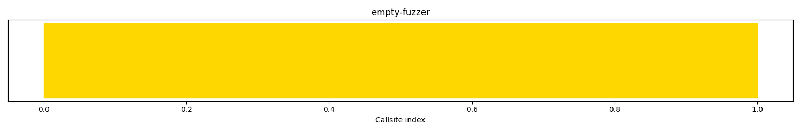

The following table shows data about each function in the project. The functions included in this table correspond to all functions that exist in the executables of the fuzzers. As such, there may be functions that are from third-party libraries.
For further technical details on the meaning of columns in the below table, please see the Glossary .
| Func name | Functions filename | Args | Function call depth | Reached by Fuzzers | Fuzzers runtime hit | Func lines hit % | I Count | BB Count | Cyclomatic complexity | Functions reached | Reached by functions | Accumulated cyclomatic complexity | Undiscovered complexity |
|---|
The calltree shows the control flow of the fuzzer. This is overlaid with coverage information to display how much of the potential code a fuzzer can reach is in fact covered at runtime. In the following there is a link to a detailed calltree visualisation as well as a bitmap showing a high-level view of the calltree. For further information about these topics please see the glossary for full calltree and calltree overview
Call tree overview bitmap:
The distribution of callsites in terms of coloring is
| Color | Runtime hitcount | Callsite count | Percentage |
|---|---|---|---|
| red | 0 | 0 | 0.0% |
| gold | [1:9] | 1 | 100.% |
| yellow | [10:29] | 0 | 0.0% |
| greenyellow | [30:49] | 0 | 0.0% |
| lawngreen | 50+ | 0 | 0.0% |
| All colors | 1 | 100 |
| Function name | source code lines | source lines hit | percentage hit |
|---|
| filename | functions hit |
|---|---|
| /src/fuzzers/empty-fuzzer.cpp | 1 |
The following table shows a list of functions that are optimal targets. Optimal targets are identified by finding the functions that in combination, yield a high code coverage.
| Func name | Functions filename | Arg count | Args | Function depth | hitcount | instr count | bb count | cyclomatic complexity | Reachable functions | Incoming references | total cyclomatic complexity | Unreached complexity |
|---|---|---|---|---|---|---|---|---|---|---|---|---|
json::jobject::pretty(unsignedint)const
|
/src/simpleson/json.cpp | 3 | ['N/A', 'N/A', 'int'] | 10 | 0 | 514 | 111 | 80 | 101 | 1 | 533 | 533 |
json::jobject::proxy::set_array(std::__1::vector
|
/src/simpleson/json.cpp | 3 | ['N/A', 'N/A', 'bool'] | 3 | 0 | 161 | 28 | 24 | 17 | 0 | 86 | 78 |
json::jobject::entry::operatorstd::__1::vector
|
/src/simpleson/json.cpp | 2 | ['N/A', 'N/A'] | 9 | 0 | 19 | 3 | 2 | 88 | 0 | 376 | 53 |
json::jobject::operatorstd::__1::basic_string
|
/src/simpleson/json.cpp | 2 | ['N/A', 'N/A'] | 1 | 0 | 252 | 53 | 45 | 6 | 0 | 73 | 45 |
Implementing fuzzers that target the above functions will improve reachability such that it becomes:
If you implement fuzzers for these functions, the status of all functions in the project will be:
| Func name | Functions filename | Args | Function call depth | Reached by Fuzzers | Fuzzers runtime hit | Func lines hit % | I Count | BB Count | Cyclomatic complexity | Functions reached | Reached by functions | Accumulated cyclomatic complexity | Undiscovered complexity |
|---|
This sections provides heuristics that can be used as input to a fuzz engine when running a given fuzz target. The current focus is on providing input that is usable by libFuzzer.
Use this with the libFuzzer -dict=DICT.file flag
This section shows analysis of runtime coverage data.
For futher technical details on how this section is generated, please see the Glossary .
| Func name | Function total lines | Lines covered at runtime | percentage covered | Reached by fuzzers |
|---|
This section shows which files and directories are considered in this report. The main reason for showing this is fuzz introspector may include more code in the reasoning than is desired. This section helps identify if too many files/directories are included, e.g. third party code, which may be irrelevant for the threat model. In the event too much is included, fuzz introspector supports a configuration file that can exclude data from the report. See the following link for more information on how to create a config file: link
| Source file | Reached by | Covered by |
|---|---|---|
| [] | [] | |
| /src/simpleson/json.h | [] | [] |
| /usr/local/bin/../include/c++/v1/stdexcept | [] | [] |
| /usr/local/bin/../include/c++/v1/string | [] | [] |
| /usr/local/bin/../include/c++/v1/__exception/exception.h | [] | [] |
| /src/fuzzers/empty-fuzzer.cpp | ['empty-fuzzer'] | ['empty-fuzzer'] |
| /src/simpleson/json.cpp | [] | [] |
| Directory |
|---|
| /usr/local/bin/../include/c++/v1/ |
| /src/fuzzers/ |
| /src/simpleson/ |
| /usr/local/bin/../include/c++/v1/__exception/ |
This sections shows the raw data that is used to produce this report. This is mainly used for further processing and developer debugging.
| Fuzzer | Calltree file | Program data file | Coverage file |
|---|---|---|---|
| empty-fuzzer | fuzzerLogFile-0-NE42nEuLij.data | fuzzerLogFile-0-NE42nEuLij.data.yaml | empty-fuzzer.covreport |